Aporias, 2022
Aporias is a tabletop roleplaying system & supplement, featuring 120+ pages of adventure, hijinks, & story prompts across 4 booklets. Completed as my thesis project for the MFA program at the NYU Game Center, it's a blend of technical & fiction writing. I took a more playful approach to the rules writing, which worked well to incentivize more engaged reading on the player's part.
You can read more about Aporias & download the full PDFs here.
| 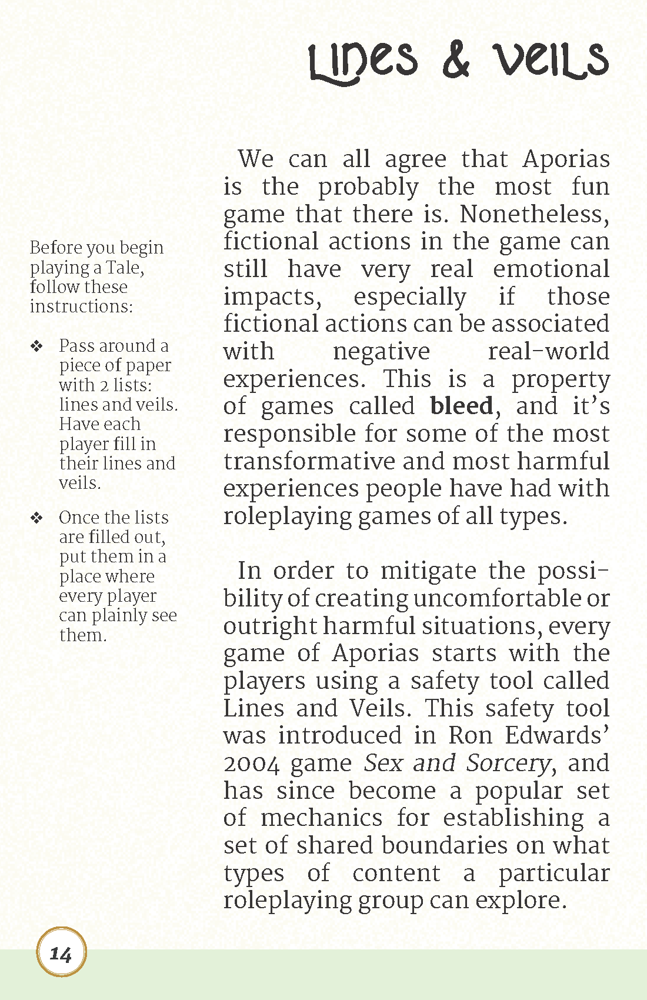 | 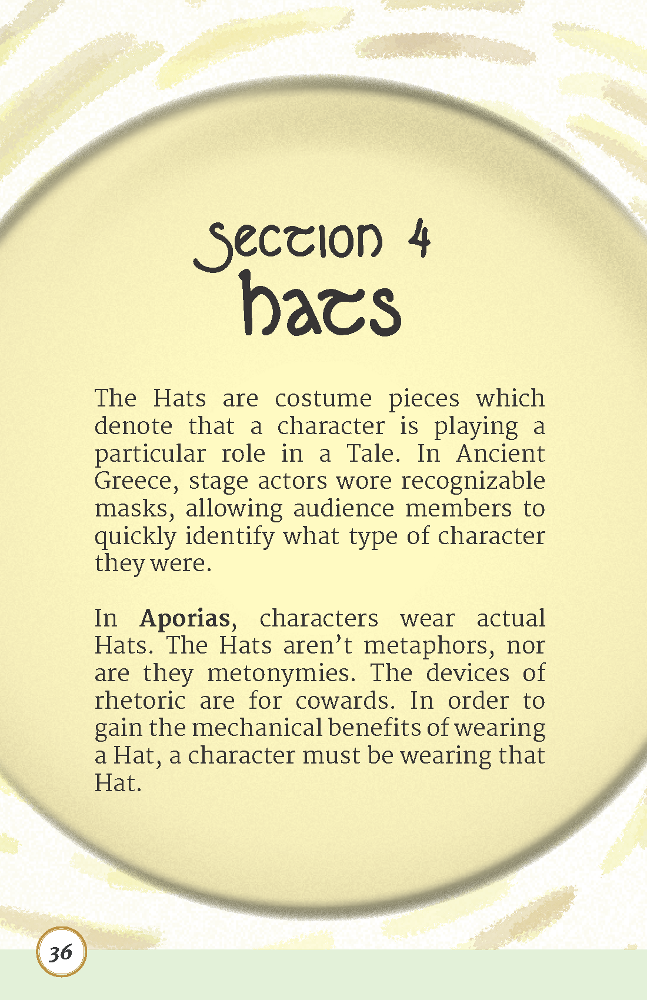 | 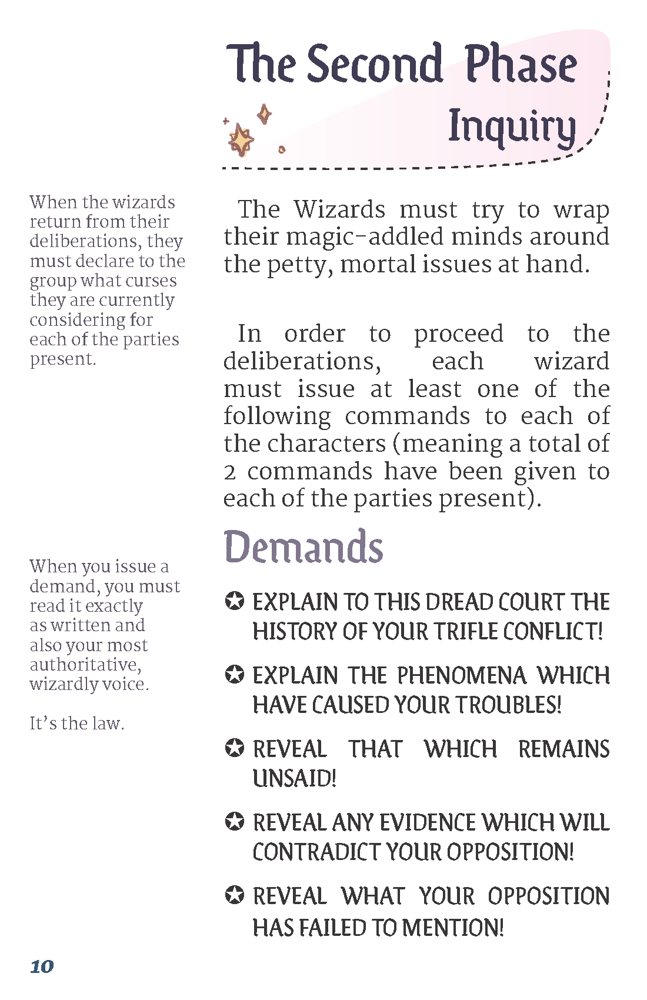 |
Advanced Checkers 2, 2022
Advanced Checkers 2 is a queer, romance roleplaying game, & the latest incarnation of my much-beloved student project Checkers 2. While the game is currently in-development, AC2's express edition completely playable due to my mastery of an ancient game design technique: legible flowcharts.
You can read more about AC2 & download the full PDF here.

|

|
Under Advisement, 2021
Under Advisement is a farcical game about hidden roles, pushing a political agenda, & doing your darnedest. It's a game made to be played specifically over Zoom, so the writing challenges included having keeping the rules as simple as possible to reduce the overall cognitive load.
You can download the PDF for Under Advisement here.
| 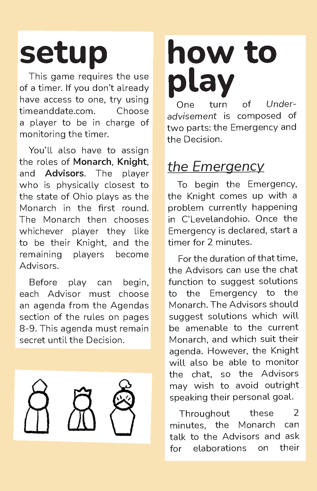 | 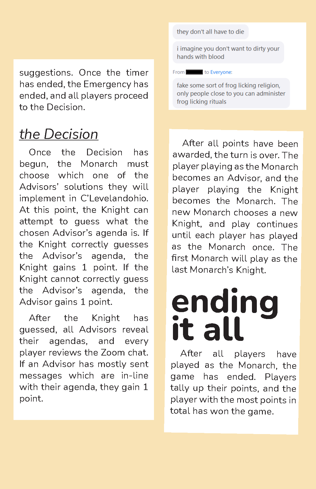 |
Signs & Wonders, 2020
Signs & Wonders is a tarot-based roleplaying game for 2 or more players. Using tarot cards, players assemble the story of an on-coming cataclysm & all of the events which preceded it. There were a number of challenges in this design, but perhaps the biggest one was finding ways to describe the action of interpreting a tarot card. My collaborator & I settled on including a section of the book which described "interpretive work."
You can read more about Signs & Wonders & download the full PDF here.| 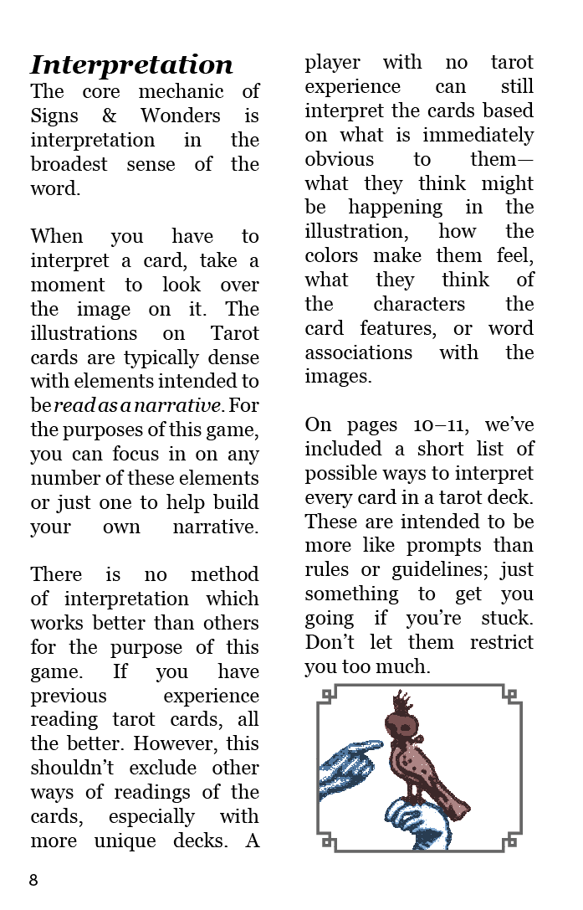 | 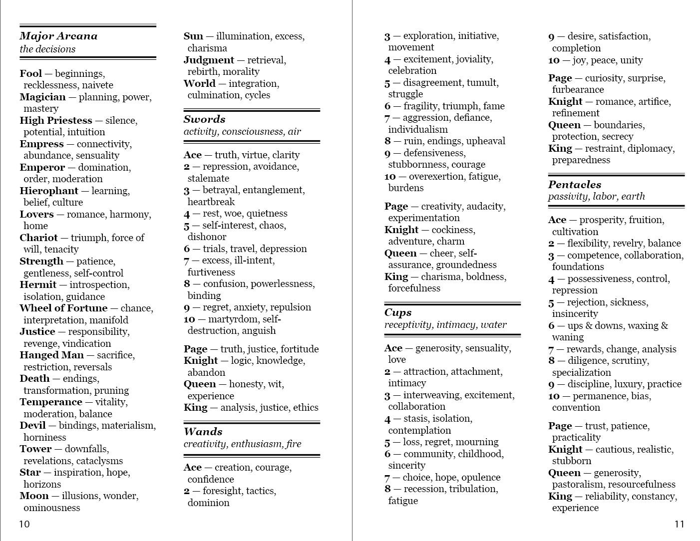 |
In space, no one can hear you bark, 2021
In space, no one can hear you bark is a branching-narrative sci-fi game which is largely composed out of barks (short snippets of dialog spoken by videogame characters which give the player orientation & information about the world around them). As a narrative designer on the project, I wrote barks, managed the overall structure of the game, & edited writing done by my colleagues to ensure consistency in each character's voice across the game.
The game consisted of a UI built in Unity, which displayed a couple dozen bark sheets in an order determined by player input. On the first image below, each sticky note is a single bark sheet.
You can read more about In space, no one can hear you bark & play the full game here.
| 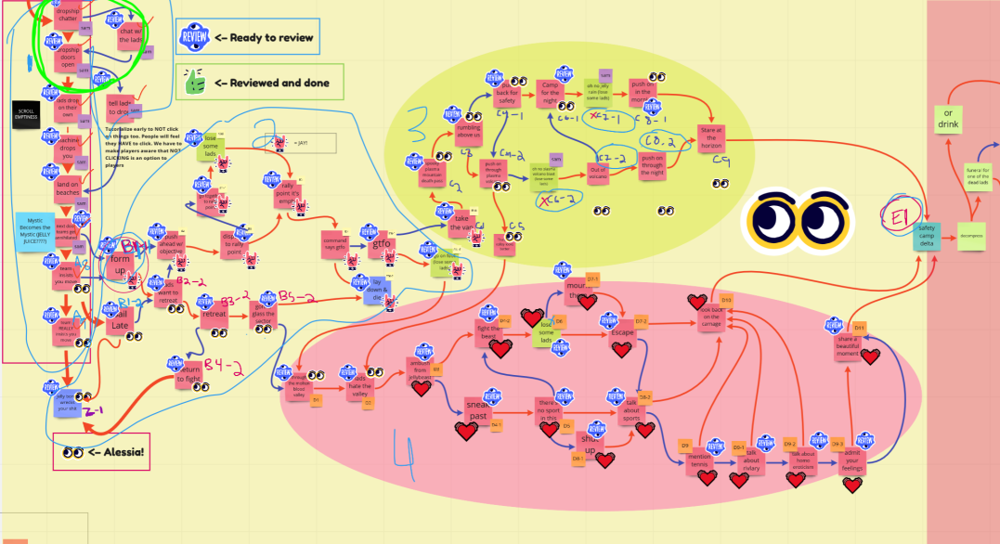 | 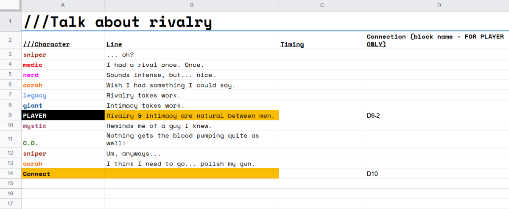 |

|
Zero Gravity, 2020
Zero Gravity is a narrative puzzle game set, you guessed it, in the vacuum of space. Gameplay consists of floating around your ship, flinging objects around, & chatting with your robot companion. I was the primary scriptwriter & UX copywriter on the game, meaning that I was responsible for writing dialog, item descriptions, & various bits text in the UI.
You can read more about Zero Gravity & play the full game here.

|
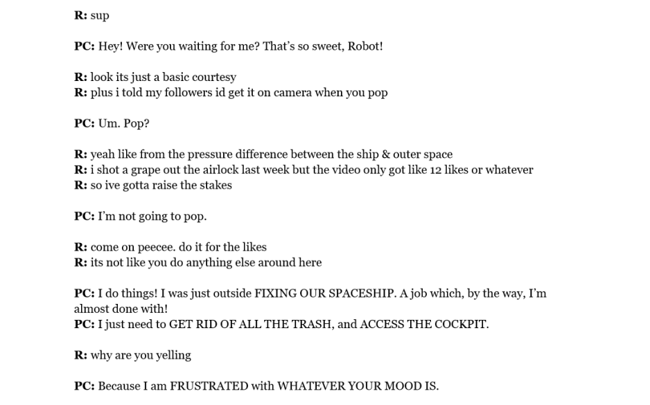 | 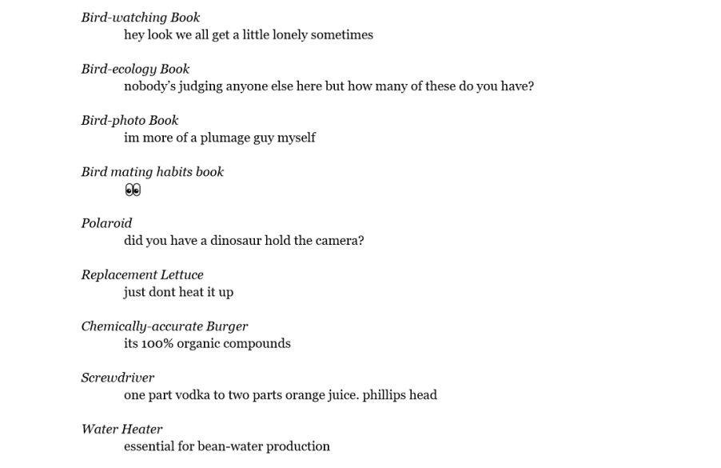 |
On Serration, 2020
On Serration is my second full essay about FromSoftware's action RPG videogame Bloodborne. It explores what fictional activities a player has to undertake in order to reveal game mechanics, & how this is used in Bloodborne to create a sense of history.
"In typical FromSoftware fashion, items in Bloodborne are accompanied by a short description which often barely explains to the player how & why the item functions. It is precisely because of this reticence, this apparent shyness of the game’s narrative, that these objects can be read as symptoms of Yharnam’s history. These tools are each monuments to trauma— by voluntarily taking up these monuments, the player is able to imagine herself as a participant in trauma (her foes’ or her own)."
You can read the full text here.
The Hunter & Her Relation to the Unconscious, 2019
The Hunter & Her Relation to the Unconscious is my first full essay about FromSoftware's action RPG videogame Bloodborne. It was the debut of my psychoanalytic approach to game studies, & applies theories laid out in Sigmund Freud's Beyond the Pleasure Principle to formal game analysis.
"Mastering the experience of unpleasure is not the same as conquering or overcoming it— under the influence of the death drive, one masters unpleasure as they might a craft. An experienced Bloodborne player is an elegant practitioner of failure, the game serves as a space for their recreational discomfort."
You can read the full text here.
fruitflesh to her muse, 2022
fruitflesh to her muse is an erotic, interactive poem written as a gift for a friend. The game is an experiment in associating the physical act of scrolling with sexual content, & creating a stacatto reading pace.
You can read the full piece here.
| 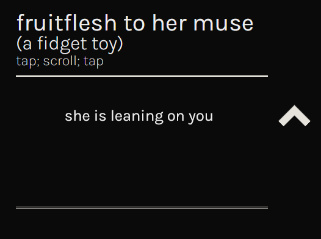 | 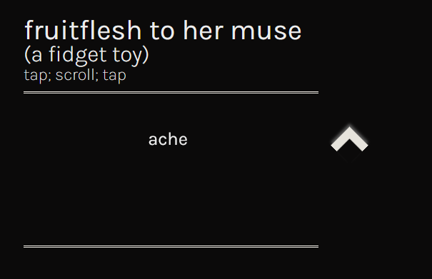 |
narrow are the vessels, 2021
Published by shufPoetry in 2021, narrow are the vessels is a collection of erasure poems. Expanding on interaction designs made for my previous collection, last november, this new collection takes a more authoritative approach & offers fewer modes of modifying the text.
You can read the full piece here.
| 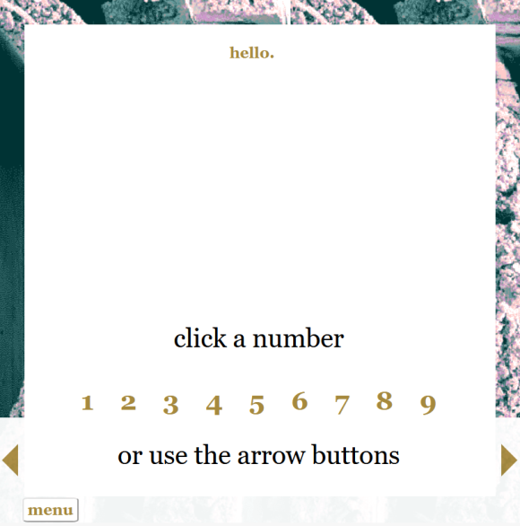 | 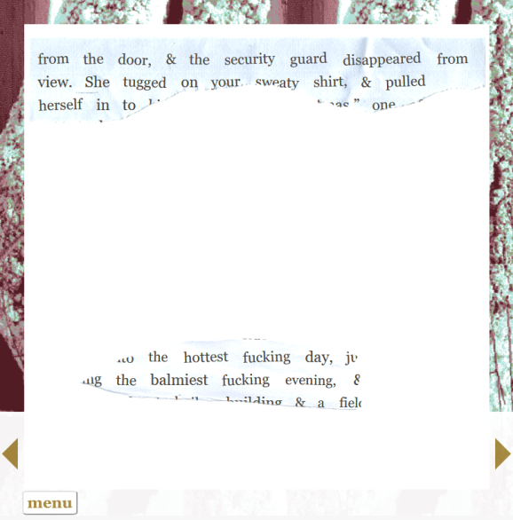 |

|
Sketch of a Job That You Had, 2021
Sketch of a Job That You Had is a fairly simple HTML interface for reading a piece of linear fiction about this one time when I had a job that I loved & loathed. Scroll, read, enjoy.
You can read the full piece here.
| 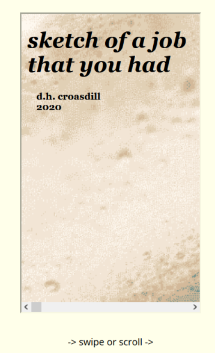 | 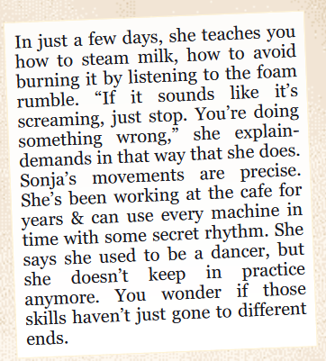 | 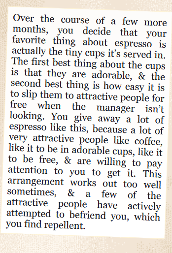 |
last november, 2019
last november i totally fucking freaked out is an interactive poetry collection which allows a reader to create erasure poems from almost any chunk of text in the game. By clicking on a particular word, a reader may toggle that word on or off, effectively "erasing" it to create new poems. A reader can also interact with the erased words by hovering their mouse over the page, creating a rosy, ghostly impression of the word.
You can read more about last november & play the full game here.
| 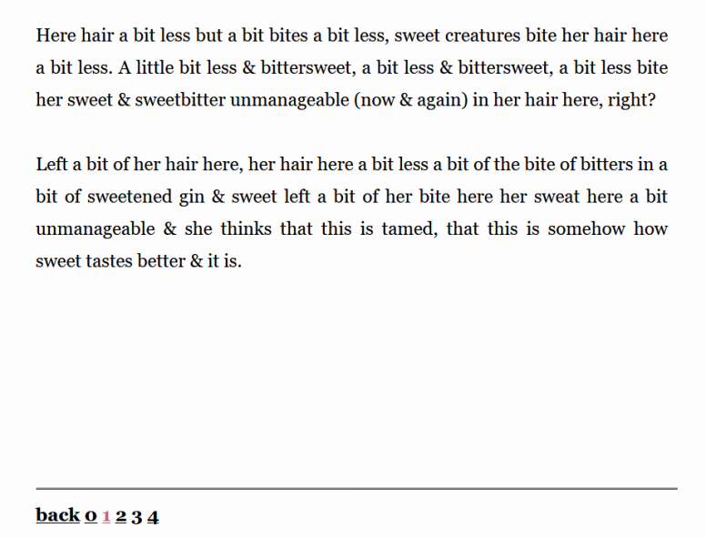 | 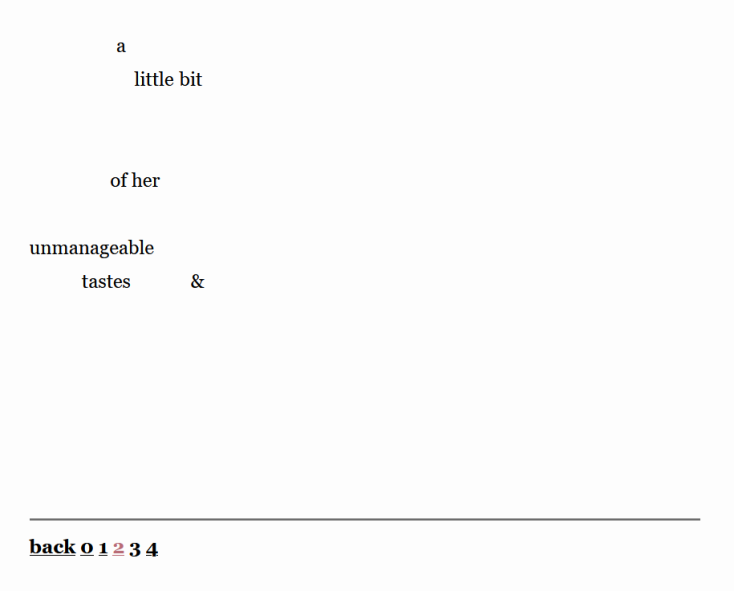 | 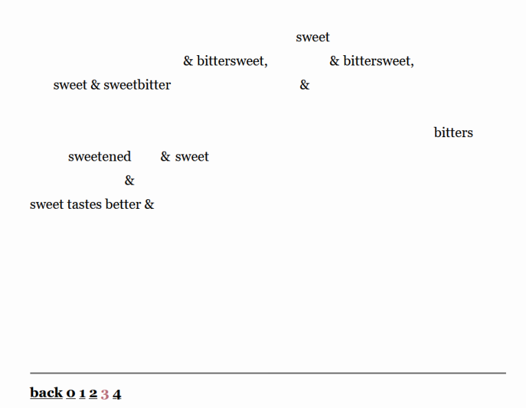 |